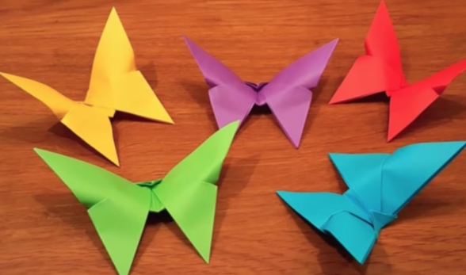
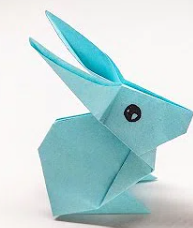
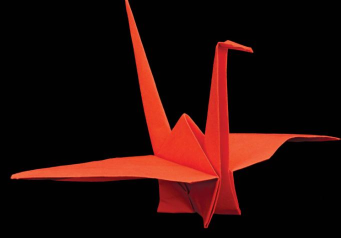

Origami designs
Origami is derived from two Japanese words: Ori (folded) and Kami (paper).
Before that, the art was called “orikata” (folded shapes).
An ancient Japanese legend says if you fold one thousand cranes you will be granted a wish.
Let me show you a few desings and how to make them.......Lets go

Interesting facts about Butterfly(click on the pic to know how to make it)
- Butterfly wings are transparent.
- Butterflies only live for a few weeks.
- Butterflies use their feet to taste.
- Some butterfly species migrate from the cold.

Interesting facts about Rabbits(click on the pic to know how to make it)
- A baby rabbit is called a kit, a female is called a doe and a male is called a buck.
- Rabbits are very social creatures that live in groups.
- A rabbit's teeth never stop growing!
- Rabbits perform an athletic leap, known as a 'binky', when they're happy — performing twists and kicks in mid air!

Interesting facts about cranes(click on the pic to know how to make it)
- Cranes are powerful flyers, with some having the ability to fly over the Himalayas.
- During migration cranes fly with their head and neck straight out and their feet and legs straight behind them.
- Cranes form lifelong monogamous pair bonds.
- The mating dance of the crane is spectacular.
About Us
Follow Us